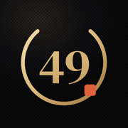

Schulte-Tabelle online
Finde die Zahlen der Reihe nach, so schnell du kannst. Die Zeit läuft ab deinem ersten Tippen. Kostenlos, im Browser, ohne Anmeldung.
Deine Bestzeiten werden nur in diesem Browser gespeichert.

Sieh, wie deine Konzentration besser wird
Diese Tafel gibt dir eine Zeit. Die App 49 fürs iPhone zeigt dir, was dahintersteckt, und verfolgt deine Fortschritte.
- Analyse nach jedem Spiel: wo du schneller und langsamer wurdest, wann du die Konzentration verloren hast und welche Zahlen dir am schwersten fallen
- Fortschritt über die Zeit: Bestzeiten, Trends und Einblicke in deinen Rhythmus und deine Genauigkeit
- Eine Tages-Challenge, Ränge von Neuling bis Legende und 539 Erfolge
- Mehr Spielweisen: Endlos und Gegen die Uhr, Tafeln bis 11 × 11 und Live-Duelle 1 gegen 1 mit Freunden
Kostenlos spielbar.
Was ist eine Schulte-Tabelle?
Eine Schulte-Tabelle ist ein Raster mit gemischten Zahlen, die du so schnell wie möglich der Reihe nach findest. Sie ist nach dem deutschen Psychiater Walter Schulte benannt und wird seit Langem als Übung für Aufmerksamkeit, visuelle Suche und schnelles Lesen genutzt. Die klassische Tabelle ist 5 × 5 groß, mit den Zahlen 1 bis 25.
So geht’s
- Wähle eine Tafel. 5 × 5 ist der Klassiker, 7 × 7 ist der Standard in 49.
- Tippe auf 1, dann 2, dann 3, bis zur letzten Zahl. Die Zeit läuft ab deinem ersten Tippen.
- Ein falsches Tippen zählt als Fehler, hält die Zeit aber nicht an. Also einfach weitermachen.
- Zur Abwechslung zählst du abwärts: Starte bei der höchsten Zahl.
So wirst du schneller
- Halte den Blick in der Mitte der Tafel und lass dein seitliches Sehen die nächste Zahl finden, statt Reihe für Reihe zu lesen.
- Sag dir die nächste Zahl im Kopf, bevor du sie suchst.
- Hetz nicht nach einem Fehler. Eine ruhige Sekunde ist schneller als drei falsche Tipps.
- Spiel jeden Tag ein bisschen. Kurzes, regelmäßiges Üben bringt mehr als eine lange Runde.
Fragen
Ist das kostenlos?
Ja. Die Tafel auf dieser Seite ist kostenlos, ohne Konto und ohne Werbung. Die App 49 ist ebenfalls kostenlos spielbar.
Funktioniert das auf dem Handy?
Ja, auf Handy, Tablet und Computer. Am Computer kannst du auch die Tastatur nutzen: Mit Tab zu einer Zahl springen und Enter drücken.
Verbessert die Schulte-Tabelle die Konzentration?
Mit Übung werden deine Zeiten besser, und die Übung fordert genau die Aufmerksamkeit und visuelle Suche, auf denen sie beruht. Sie ist ein Spiel zum Üben der Konzentration, keine medizinische Behandlung.
Was ist eine gute Zeit?
Das hängt von der Tafel und von dir ab. Vergleich dich also mit deiner eigenen Bestzeit, die sich diese Seite merkt. In der App 49 zeigen die Game Center Bestenlisten, wo du im Vergleich zu anderen stehst.